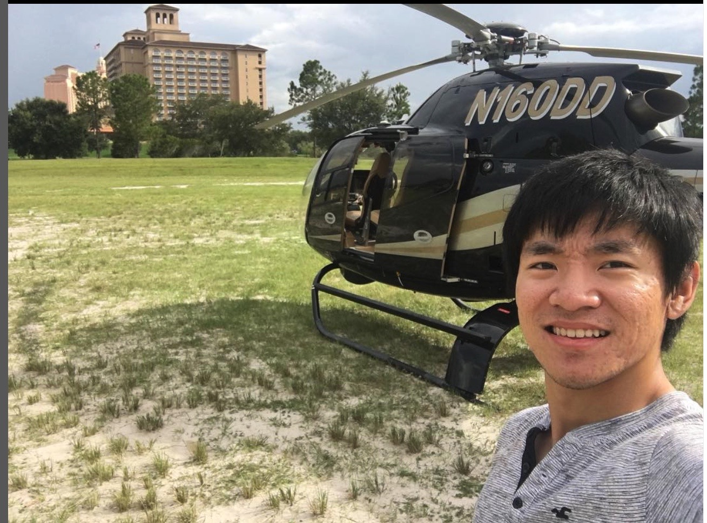

The most exciting kind of aircrafts, in my opinion, is rotary wings. Opposed to fixed wing aircrafts that are inherently aerodynamically stable, rotary wings employ complex mechanics to generate and counter forces using almost unnatural principles to fly. And handling such a machine is both exciting and thrilling.
Among them, the Airbus Helicopter H120 is the one that I have the most chance of flying, because my friend owns one! 
But aside from that, the H120 is really the ultimate helicopter for pilots: it's powerful, nimble and smart. 3-bladed Speriflex fully-articulated rotor head coupled with composite material rotor blades makes it rapidly responsive to inputs. 
 Its and the 8-bladed fenestron anti-torque tail rotor and Rolls-Royce Turboshaft engine defines its iconic and pleasant sound signature and provides endless power for its size.
Its and the 8-bladed fenestron anti-torque tail rotor and Rolls-Royce Turboshaft engine defines its iconic and pleasant sound signature and provides endless power for its size. 
Aside from the technical aspect, the glass cockpit, superior visbility and spacious cabin make flying it a pleasure.